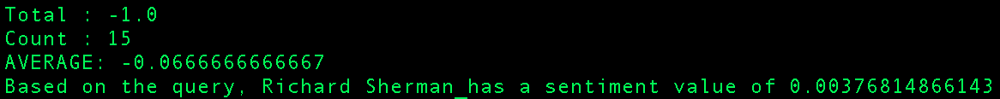

This App will allow you to to view how favorable your NFL teams are on twitter. It all starts with a mapping from words to sentiment values.
Let $$W := \lbrace words \in dictionary \rbrace$$ For each word, there exists a surjective function $$F : W -> \lbrace x \in \mathbb{Z} : -1 \le x \le 1 \rbrace$$ such that $$F(w) = value$$ For example, $$F(Bad) = -0.95$$ $$F(Good) = 0.95$$ $$F(Cat) = 0.0$$

View the source
This app was written in Python2.7 A good introduction to Sentiment Analysis is here